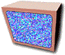

Are you looking to have a website that invokes the nostalgia of the late 90’s and early 2000’s? Do you want a website that screams, “I am very aware of the dangers of the Y2K bug.”? We build modern websites with the look of classic websites to fit your niche needs. We’ve got designs for blog websites; sites designed for the promotion and sale of home brew Nintendo games, sites for stores that specialize in retro video games, and even websites for brick and mortar video stores. With Retro Sites, bring your nostalgia, leave your worries!